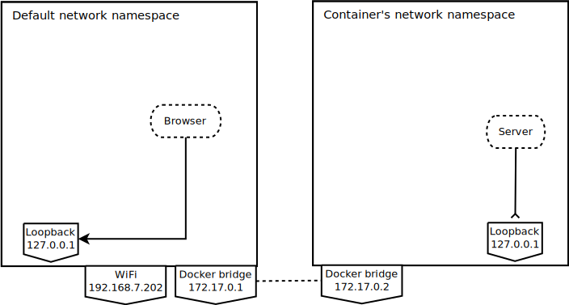
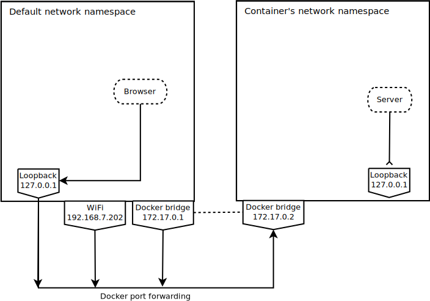

Docker 部署 Flask App
修改了一个基于Flask的青年大学习的截图生成器，生成类微信截图。然后将项目容器化，制作Dockerfile和docker-compose进行管理，通过Docker一键部署。
这玩意有什么用？还真没有，如果你知道青年大学习是什么，你就知道有（没）啥用，就当练手了。
重要的是，对Docker有了进一步的理解以及熟悉。项目地址
P图
这一步是将获得的学习结束截图，P成从微信里截图的样子，使用PIL绘制一个head.jpg，然后与原图进行拼接得到微信截图的样子。这里简略介绍以下PIL几个方法的使用：
生成画布，学习结束图片的宽是828px，
1
2# 这里的三个参数分别是图片模式，画布大小，以及画布背景
img = Image.new('RGB', (828, 78), (255, 255, 255))绘制文本
1
2
3
4
5# 这里的font_type是指字体的路径
font = ImageFont.truetype(font_type, 28)
draw = ImageDraw.Draw(img)
# 图片添加文字，三个参数分别表示文本左上角的坐标（画布左上角为坐标原点）、文本内容、颜色和字体
draw.text((60, 20), title, color, font=font)保存图片
1
img.save("./static/img/qndxx/head.jpg")

图片拼接
1
2
3
4
5
6
7绘制一个最终大小的画布
merge_img = Image.new('RGB', (size1[0], size1[1]+size2[1]))
# 拼接坐标
loc1, loc2 = (0, 0), (0, size1[1])
# 将图片左上角对齐拼接坐标，粘贴
merge_img.paste(img1, loc1)
merge_img.paste(down_img, loc2)这样子就生成了假的微信截图：


Docker部署
因为不可能一直本地打开运行，然后生成截图，所以丢一个在服务器上跑。
然后怎么跑？学习了一波项目容器化。
编写Dockerfile
Dockerfile像是一个脚本，里面编写好命令，然后容器创建的时候会根据步骤一步一步构建。通过Dockerfile可以实现自动化构建项目容器。
1 | FROM python:3.7-alpine AS build |
这里解释以下每句话的作用：
第1行的使用
python:3.7-alpine镜像构建基础容器。这里为什么选择alpine版本的python容器？因为可以节省空间以及其体积小，使得构建过程更快。
python:3.7-alpine是一个在 Alpine 系统下 Python3.7 镜像，Alpine的优势是「系统的体积小」(系统镜像约 5 MB，而 Ubuntu 系列镜像接近 200 MB，可见一斑)、「运行时资源消耗低」和「提供包管理工具apk，包管理机制完善」等。我是很推荐使用 Alpine 替代 Ubuntu 之类系统做为基础镜像环境的。第2-4行是换源，修改 Alpine 使用国内中科大的源，加快软件下载速度。
第5行更新pip
第6-16行安装PIL依赖
第17行切换到/app目录
第18行获取Python项目
docker-compose
到这里基础环境基本配置好了，接下来在docker-compose.yml里对容器进一步配置。
1 | version: '3' |
第1行version是指compose文件格式的版本，理论上根据安装的Docker版本来选择。1、2、3是大版本，还是 minor 版本
第2行services，每个容器是一个服务，这里比较简单，这个web应用只有qndxx一个服务
第4行设置容器名称为qndxx
第5行是对当前目录里的Dockerfile进行构建
第6行设置端口映射，将容器里的8888端口映射到主机端口的35555上。这里添加
127.0.0.1是为后面nginx反向代理做准备第8-9行，volume是卷的意思，这里是挂载文件，将当前文件夹下的FuckQNDXX挂在到容器对应目录
这里说明以下，这里将第8-9行注释了是因为一开始调试代码及测试，通过挂载方式比较方便，修改的内容可以实时更新到容器中，同时，Flask app开启debug模式就基本上实现了热部署
第10行是切换目录到项目，安装必要依赖（通过requirments.txt管理），然后启动该应用
第11行设置容器自动重启
部署
在当前目录运行tree -L 1查看目录结构：
1 | . |
执行以下命令，一键部署：
1 | docker-compose up -d |
配置好后，基本上一劳永逸，部署就是上面这么简单。
小结
docker有点像虚拟机，有独立的网络，进入容器后就行打开了一个新的环境。但在部署docker容器的过程中，体会到docker和虚拟机不一样的地方。相对来说，虚拟机可以说是持久的，而docker是临时的，可以删除，然后快速重建。
在配置容器过程中，配置PIL的环境花了一番时间，因为一开始不知道PIL需要依赖，也不知道需要什么依赖，然后看官方文档里面说明了安装使用PIL的一些必要依赖：
We provide binaries for Linux for each of the supported Python versions in the manylinux wheel format. These include support for all optional libraries except libimagequant. Raqm support requires libraqm, fribidi, and harfbuzz to be installed separately
以及
You do not need to install all supported external libraries to use Pillow’s basic features. Zlib and libjpeg are required by default.
以及（划重点）
There are Dockerfiles in our Docker images repo to install the dependencies for some operating systems.
在官方的镜像仓库找到alpine的构建PIL环境的Dockerfile，其中只需要PIL依赖部分：
1 | # Pillow dependencies |
通过这个反复折腾PIL环境的过程，体会到了Docker与虚拟机之间的区别😥。这个过程就像捏泥人，你可以捏到你想要的样子为止，Docker也是你可以调试到你满意为止，期间容器反复重建。舍不得你就输了
Nginx
使用Nginx进行反向代理：
1 | upstream qndxx { |
这个可以作为简单的Nginx的https模板使用，需要修改的地方也就是上面注释的地方。
最后
Docker
docker容器化对原应用进行一些修改，比如MainServer.py中的运行语句：
1 | - app.run(host='127.0.0.1', port=8888, debug=True) |
使用127.0.0.1，会导致Connection refused，修改成0.0.0.0监听使用对容器qndxx的8888端口所有请求即可。解释这个原因，可以看一下这篇文章Connection refused? Docker networking and how it impacts your image，这里把文章两个图拿过来简单解释下：
服务器正在容器网络名称空间内监听127.0.0.1，但是端口转发将指向外部IP，即172.17.0.2。
明明白白的解释了，服务端没有监听到来自172.17.0.2的端口请求
主机端口转发只能连接到一个目的地，但您可以更改服务器进程监听的位置。您可以通过监听0.0.0.0来实现这一点，这意味着监听所有接口。
Flask
url_for
着重讲一下其中url_for函数参数设置引发的问题。
fake_pic.html中图片显示原来是：
1 | <img src={{url_for ('.static', filename=pic_src, _external=True)}}/> |
本地部署当然是没问题，但是使用了nginx，使用的是子域名（带端口）（https://test.umm.js.org.com:35553），启用_external的情况下会导致图片的地址中将端口设成80（http://test.um.js.org），使得显示图片失败。查了下_external的相关文档：
- _external – if set to
True, an absolute URL is generated. Server address can be changed viaSERVER_NAMEconfiguration variable which falls back to the Host header, then to the IP and port of the request.
我重新设置了SERVER_NAME、SERVER_PORT和PREFERRED_URL_SCHEME，但是什么变化没看到。后来随手删了这个参数，居然正常了？还不是很明白为什么。
静态资源缓存
项目部署后，遇到静态资源缓存问题：
通过服务器获取截图图片，当修改期数后，再次生成，浏览器中截图始终不变，但服务器中的最新生成的截图（
latest.jpg）已经更新。
这里涉及到 flask 设置的默认参数SEND_FILE_MAX_AGE_DEFAULT，也就是缓存的最大时间，默认是 12h，即 43200s。在浏览器中查看静态资源的header中Cache-Control，也就是缓存策略，默认应该显示的是43200。
由于flask默认设置的缓存时间太长了，虽然我们重新发送请求来获取新的截图，但浏览器认为这个资源已存在（未过期），生成的页面也就仍使用之前缓存的图片，并未重新从浏览器获取、刷新图片，造成图片显示错误的问题。
解决方法就是将SEND_FILE_MAX_AGE_DEFAULT参数设置小一点即可：
1 | from datetime import timedelta |
从Flask部署，到Dockerfille配置PIL环境，再到docker-compose管理以及Nginx反向代理，踩了很多坑，也学到了不少东西，理解了很多。实践出真知（给我哭😭）